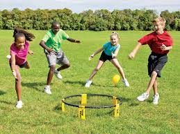

Like to play volleyball but can't get enough people? This is the sporting activity for you! Spikeball is one of my favorite sports just for the reason that it does not require a lot of people and all that is needed for a venue is just a big grass field which is never better than in the spring with the freshly grown grash and light breeze that keeps you cool. It does require fairly decent weather which is why it also falls into this season even though it can be played at anytime. It is also great to play on the beach on the sand when there is enough room which tends to be earlier in the year which is another reason why Spring is the best since you will be able to get a beach to yourself without any real problem. You can ease people in on their nice spring strolls or you can play to the death with your best friends, the options really are yours!